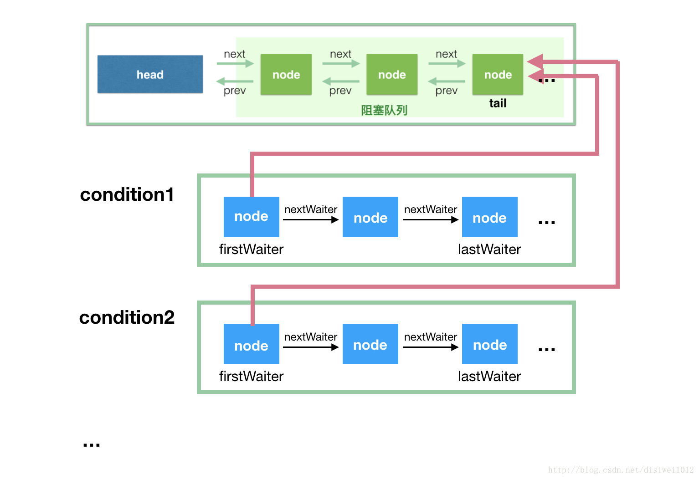
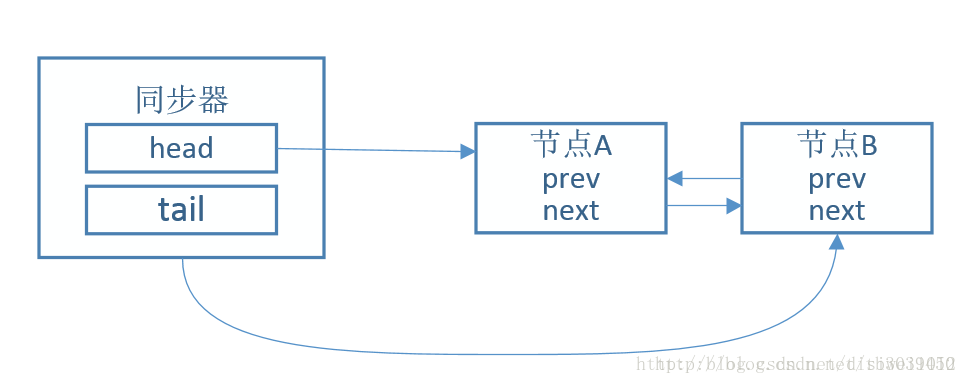
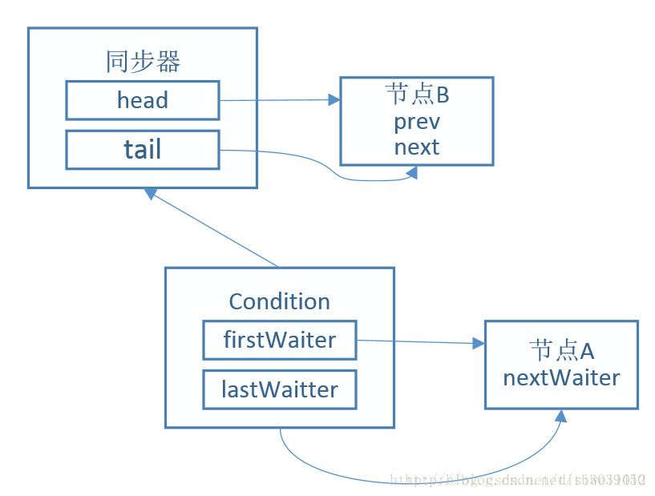
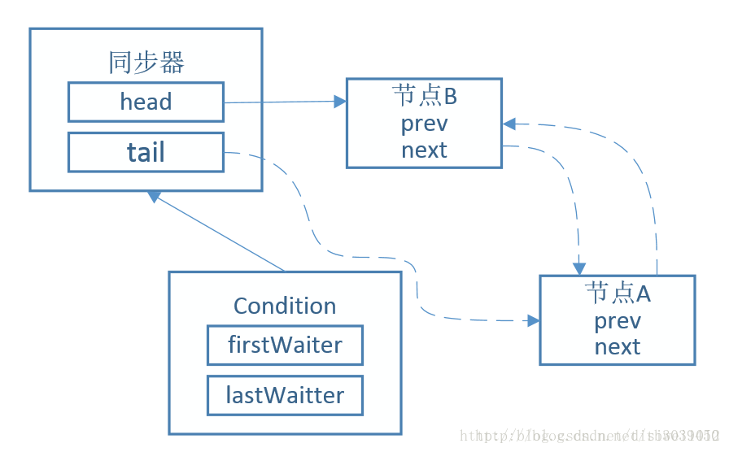

aqs
AQS（AbstractQueuedSynchronizer）是JAVA中众多锁以及并发工具的基础，其底层采用乐观锁，大量使用了CAS操作， 并且在冲突时，采用自旋方式重试，以实现轻量级和高效地获取锁。
AQS虽然被定义为抽象类，但事实上它并不包含任何抽象方法。AQS是被设计为支持多种用途，如果定义抽象方法，子类在继承的时候就需要实现所有抽象方法，所以AQS将需要子类覆盖的方法都设计为protect方法，默认抛出UnsupportedOperationException异常，。如果子类用到这些方法就必须重写，否则会抛出异常，如果没有用到则不需要做任何操作。
AbstractQueuedSynchronizer只继承了AbstractOwnableSynchronizer，实现了java.io.Serializable接口。
AbstractOwnableSynchronizer类是一种同步器，这个类仅有set和get独占线程资源。
exclusiveOwnerThread 即独占资源的线程。
AQS原理
AQS维护了一个state变量和node双向链表。
state是已获取资源占有许可的数量。例如线程调用acquire(1)获取资源的许可，acquire会调用一次tryAcquire(1)获取资源。如果获取成功，则state加1并且调用父类的设置独占线程将当前线程设置为独占线程。如果获取失败，则说明已经有线程占用了这个资源，需要等待占用释放。此时将该线程封装成node节点，加入双向链表，之后Locksupport.pack()堵塞当前线程。如果这个线程被唤醒则继续循环调用tryAcquire获取许可，如果获取到了将自己的node节点设置为链表的头结点并把之前的头结点去掉。如果线程释放资源，调用release方法，release方法会调用tryRelease方法尝试释放资源,如果释放成功，则state减1，再调用AQS的父类AbstractOwnableSynchronizer的设置独占线程为null，再locksupport.unpack()双向node链表的头node节点的线程，恢复其执行。
源码
成员变量
|
|
有一个头尾节点和state变量，实现CAS的Unsafe的工具类，还有一些偏移量，都用于Unsafe的CAS操作，通过静态代码块进行初始化，通过objectFieldOffset获取对应字段相对于该对象的起始地址的偏移量。
Node节点
|
|
enq方法
|
|
enq方法是将node加入链表，如果tail尾节点为空则必须进行初始化，如果tail不为空，则将node的前指针指向tail，通过CAS将tail的指向改为node，然后设置t.next为node，完成node插入链表尾部。
addWaiter方法
|
|
addWaiter方法包装node节点，放入node双向链表。如果tail不为空则说明初始化过了直接将node加入链表尾部，如果为空则进行初始化再将node加入链表尾部。
共享模式
acquireShared（获取锁）
|
|
尝试去获取资源，如果没有获取资源返回负数，tryAcquireShared方法需要子类自己去实现，如果不实现会直接抛异常（在读写锁的Sync实现）；如果没有获取到资源加入等待队列等待获取资源。
doAcquireShared
|
|
先吧当前节点加入到队列尾部，然后进入自旋，自旋的目的是为了获取资源或者阻塞，如果此节点的前一个node是head节点，就去获取资源，如果获取失败就执行shouldParkAfterFailedAcquire，将前一个node设置为SIGNAL，获取成功就setHeadAndPropagate。
setHeadAndPropagate
|
|
会唤醒后面的所有节点
doReleaseShared（唤醒）
|
|
unparkSuccessor方法
|
|
用unpark()唤醒等待队列中最前边的那个未放弃线程，node的waitStatus为signal或condition，则可以唤醒，先重置node的waitStatus为0（允许失败），找到下一个需要唤醒的节点唤醒。
从后往前找是因为下一个任务有可能被取消了，节点就有可能为null
shouldParkAfterFailedAcquire
|
|
主要是进行的状态的检查，如果前一个节点的状态是-1则返回true；如果前一个节点取消了，那就向前找到一个没有被取消的节点，将取消的节点舍弃，如果前一个节点没有被取消则将节点状态设置为-1.
releaseShared（ 释放锁）
|
|
独占模式
acquire（获取锁）
|
|
首先也是尝试获取资源，如果获取到资源则直接返回了，如果没有获取到资源则执行acquireQueued(addWaiter(Node.EXCLUSIVE), arg)，将该线程加入队列节点尾部。
acquireQueued
|
|
和共享模式类似，先获取该节点的前一个节点，如果前一个节点是头结点就尝试获取资源。如果获取到资源则把这个接地点设为头节点 直接返回了；如果没有获取到资源则进入阻塞挂起。
挂起逻辑同上。
cancelAcquire
|
|
获取锁资源失败的处理，即自己实现的获取资源的逻辑出异常的时候会进入到这里。（共享模式同这里的）
release（释放锁）
|
|
条件队列(ConditionObject)
使用场景
Condition一般都是配合一个显式锁Lock一起使用，Lock接口的方法中有一个newCondition()方法用于生成Condition对象。
通过ReentrantLock的lock方法，如果获取不到锁当前线程会进入AQS队列阻塞；被唤醒后继续获取锁，如果获取到锁，移出AQS队列，继续执行；遇到Condition的await方法，加入“条件队列”，阻塞线程；被其他线程的signal方法唤醒，从“条件队列”中删除，并加入到AQS队列，如果获取到锁就继续执行。可以看到上述操作，线程节点（Node）其实在两个队列之间切换，由于“条件队列”在被唤醒时 都是从头开始遍历，所以只需要使用单向链表实现即可。
|
|
ConditionObject 实现了 Condition接口，Condition接口中一个有7个接口：
- await : 使用这个锁必须放在一个显式锁的lock和unlock之间，调用该方法后当前线程会释放锁并被阻塞，直到其他线程通过调用同一个Condition对象的signal或者signalAll方法或被中断，再次被唤醒。（可被中断）
- awaitUninterruptibly : 此方式是不可被中断的，只能通过其他线程调用同一个Condition对象的signal或者signalAll方法，才能被唤醒。（不响应中断）
- awaitNanos : 等待纳秒时间
- await(long time, TimeUnit unit) : 等待一个指定时间
- awaitUntil : 等待直到一个截止时间
- signal : 唤醒等待队列中的第一个节点
- signalAll : 唤醒等待队列中的所有节点
await
|
|
先将该节点加入到条件队列，然后释放掉当前的锁，如果该节点不在AQS的阻塞队列中就阻塞该线程，等待signal；被唤醒后该线程会尝试去获取锁
signal
|
|
将条件队列的第一个节点移除，加入到AQS的阻塞队列中。
signalAll
|
|
signalAll 会遍历全部节点唤醒加入到AQS阻塞队列。
条件队列与同步队列
1.同步队列依赖一个双向链表来完成同步状态的管理，当前线程获取同步状态失败 后，同步器会将线程构建成一个节点，并将其加入同步队列中。
2.通过signal或signalAll将条件队列中的节点转移到同步队列。（由条件队列转化为同步队列）

条件队列节点来源：
- 调用await方法阻塞线程；
- 当前线程存在于同步队列的头结点，调用await方法进行阻塞（从同步队列转化到条件队列）
例如：
- 假设初始状态如下，节点A、节点B在同步队列中。

- 节点A的线程获取锁权限，此时调用await方法。节点A从同步队列移除， 并加入条件队列中。

- 调用 signal方法，从条件队列中取出第一个节点，并加入同步队列中，等待获取资源
